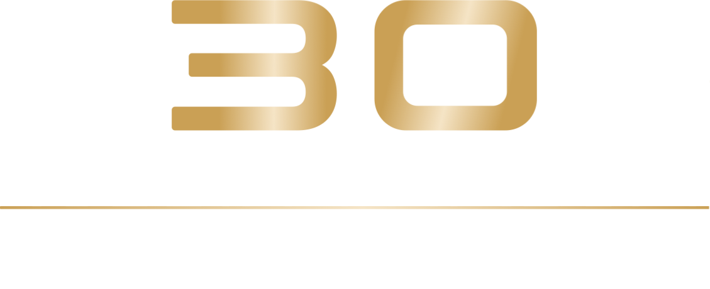

01
ПРЕДЛОЖИ
15 ИЮЛЯ — 16 СЕНТ.
Добавь проект, команду, магазин, полигон или человека, которого сообщество должно увидеть в списке претендентов.


Тридцать лет страйкболу в России. Впервые — народная премия, где победителей выбирает само сообщество: игроки предлагают номинантов, голосуют за финалистов и определяют лучших 2026 года.
В 2026 году страйкболу в России исполняется 30 лет. За это время выросла целая индустрия — производители, магазины, полигоны, организаторы, команды, медиа и игровые проекты.
Russian Airsoft Awards — премия, где победителей выбирает не жюри и не редакция, а само сообщество. Вы предлагаете номинантов, голосуете за победителей и определяете лучших 2026 года.
Добавь проект, команду, магазин, полигон или человека, которого сообщество должно увидеть в списке претендентов.
Выбери финалистов в номинациях и поддержи тех, кто действительно сделал этот год заметным для страйкбола.
Победители получают награды на финале, а среди участников голосования проходит розыгрыш призов.